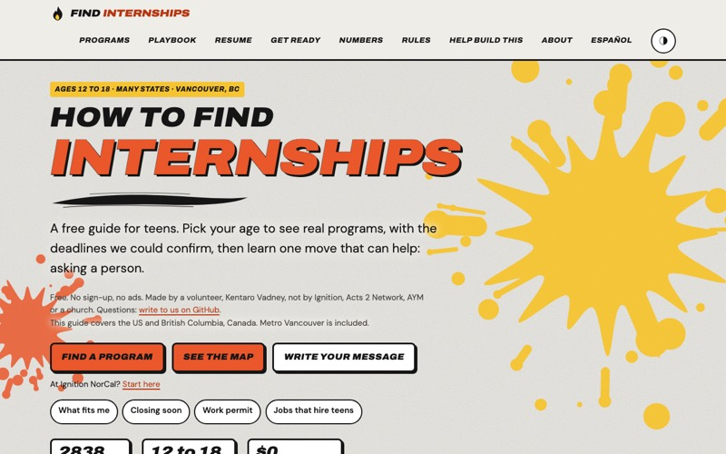

How to Find Internships
A free, searchable guide to internships, paid youth programs, research, volunteering and job shadowing for teens ages 12 to 18, with work-permit rules, a message builder for asking an adult for a chance, and a one-page resume builder. It started as a handout for a table at a student conference and grew into an open project that students help run.